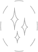

Smile Analysis
This is a way to discover the potential beauty of your smile without too much upfront commitment
This is a way to discover the potential beauty of your smile without too much upfront commitment.
What to expect
-
 Duration usually 1 hr
Duration usually 1 hr
-  Excitement and possible euphoria
What it is
A Smile Analysis workshop details benefits and shortcomings of the existing anatomical structures. Not only teeth but also everting that surrounds teeth.
During a smile design session multiple photographs are taken and analyzed as well as a 3D scan of the anatomical structures of the mouth. Once the existing anatomy is captured on film we will ask the patient to tell us about their esthetic concerns. These concerns can include but are not limited to:
- Restorations
- Defects
- Exposed Roots
- Midline Tilt
- Midline Shift
- Staining and Coloring
Once we know the primary concerns our design team will address these concerns and improve the existing smile by proposing a new design that will be presented at the following appointment.
How it is accomplished
Once the design is ready a mold of the new tooth anatomy is created which is applied to the patients teeth with self curing temporary dental acrylic. This will allow the patient to examine a brand new smile in action while having this effect completely harmless and reversible.